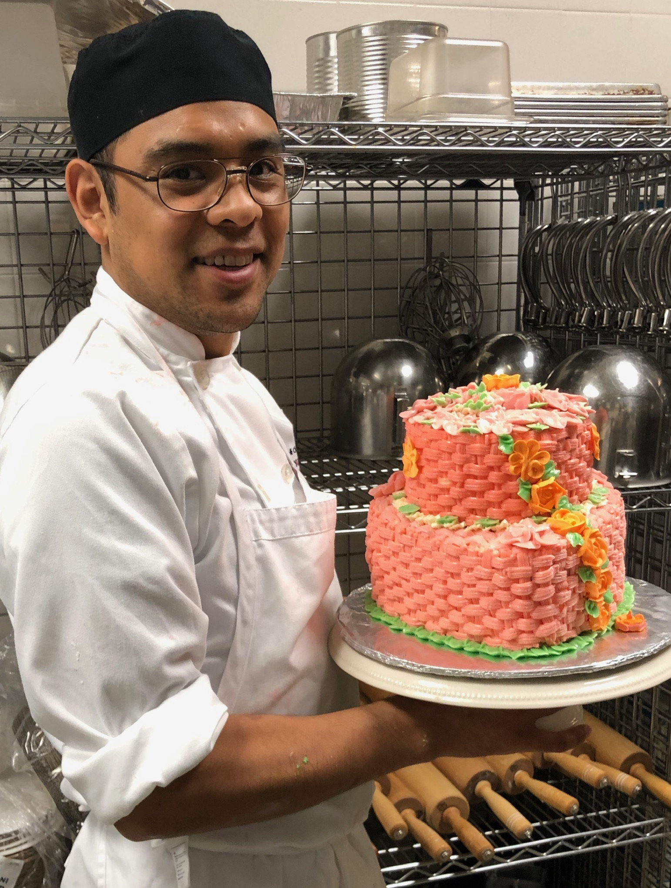

Pastry Production
Reliable execution for daily service, events, and high-volume hospitality environments.
Artisanal pastry artistry
Jose Cruz brings more than a decade of culinary experience to pastry programs, dessert production, and custom cake work for hospitality teams and private occasions.

My Work
From artisanal pastries to bespoke desserts for high-end institutions, Jose's work is defined by quality ingredients, disciplined technique, and a calm respect for the story each dessert should tell.
Reliable execution for daily service, events, and high-volume hospitality environments.
Decorating, assembly, finishing, and custom sweet presentations with polished detail.
Balanced desserts shaped around flavor, texture, cost control, and kitchen workflow.
Let's create something sweet together